Kelly Luis
PhD Student in Marine Science and Technology
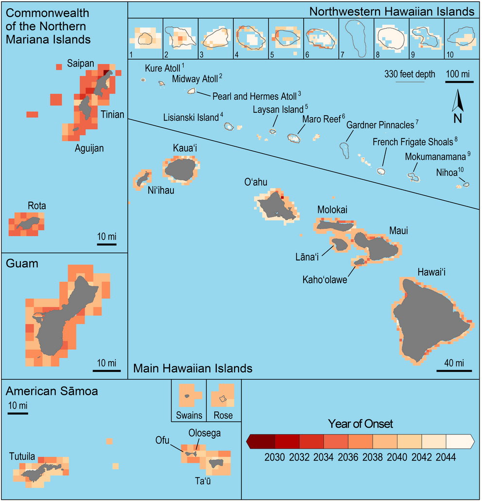
Reading layer `coast_n83' from data source `/Users/Kelly/Desktop/mauiBleaching/coast_n83.shp/coast_n83.shp' using driver `ESRI Shapefile'
Simple feature collection with 13 features and 5 fields
geometry type: POLYGON
dimension: XY
bbox: xmin: 371124.5 ymin: 2094231 xmax: 940278.9 ymax: 2458612
epsg (SRID): 26904
proj4string: +proj=utm +zone=4 +datum=NAD83 +units=m +no_defs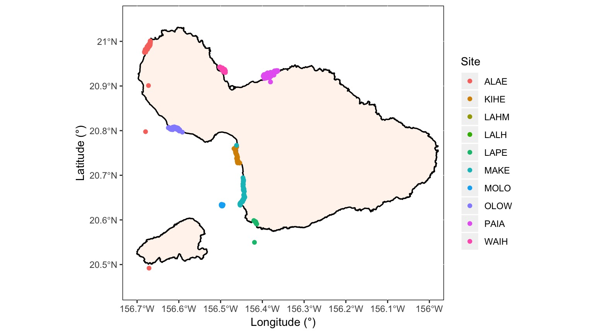
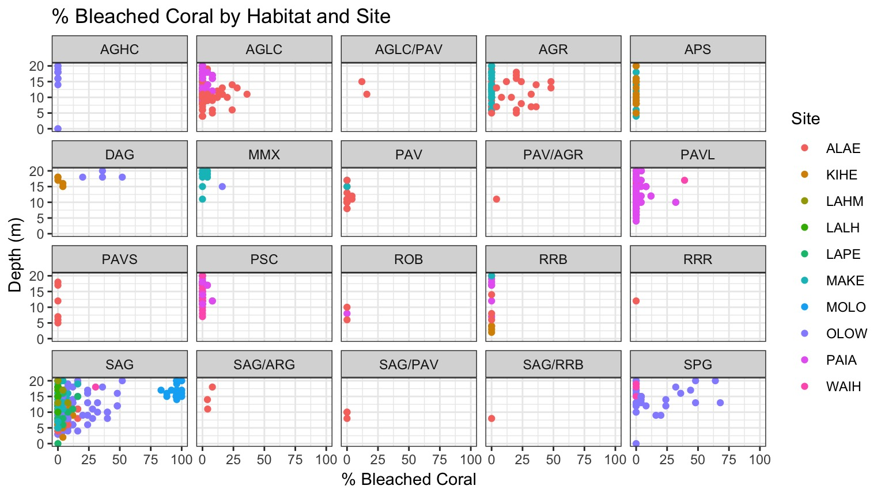
| LR Chisq | Df | Pr(>Chisq) | |
|---|---|---|---|
| Depth | 2.184216 | 1 | 0.1394321 |
| Habitat | 11.771730 | 19 | 0.8951493 |
| Site | 83.360625 | 9 | 0.0000000 |
Thoughts or Suggestions?
..or more like a mixture of follow up and uninformative plots
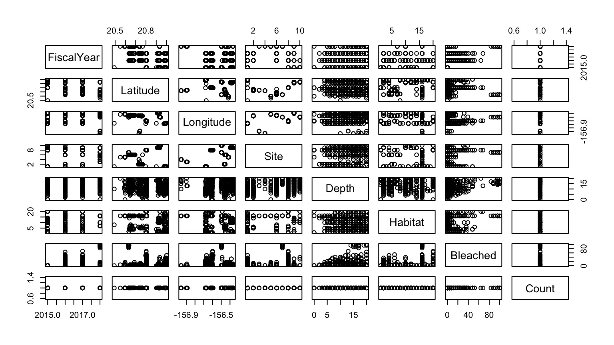
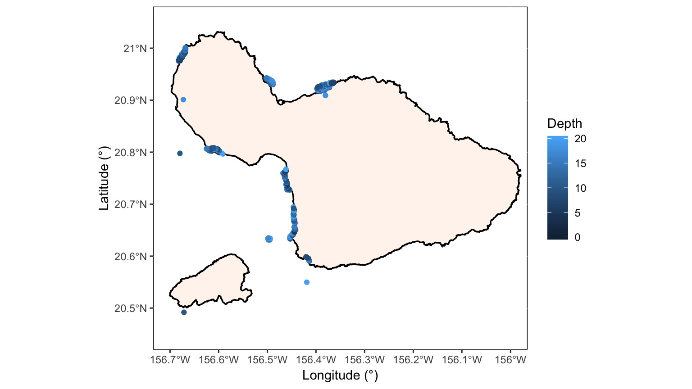
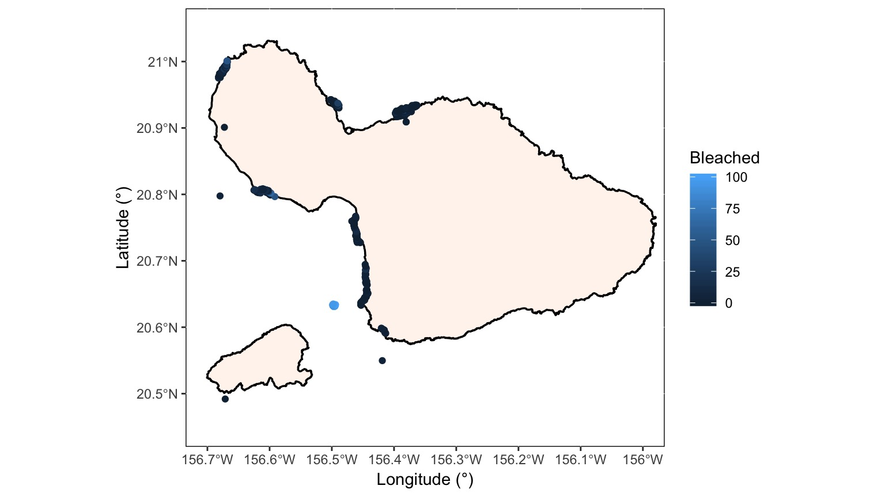
| Sum Sq | Df | F value | Pr(>F) | |
|---|---|---|---|---|
| Depth | 955.4265 | 1 | 13.148530 | 0.0003112 |
| Site | 138818.3675 | 9 | 212.267914 | 0.0000000 |
| Habitat | 5415.0566 | 19 | 3.922196 | 0.0000001 |
| Residuals | 45342.4164 | 624 | NA | NA |
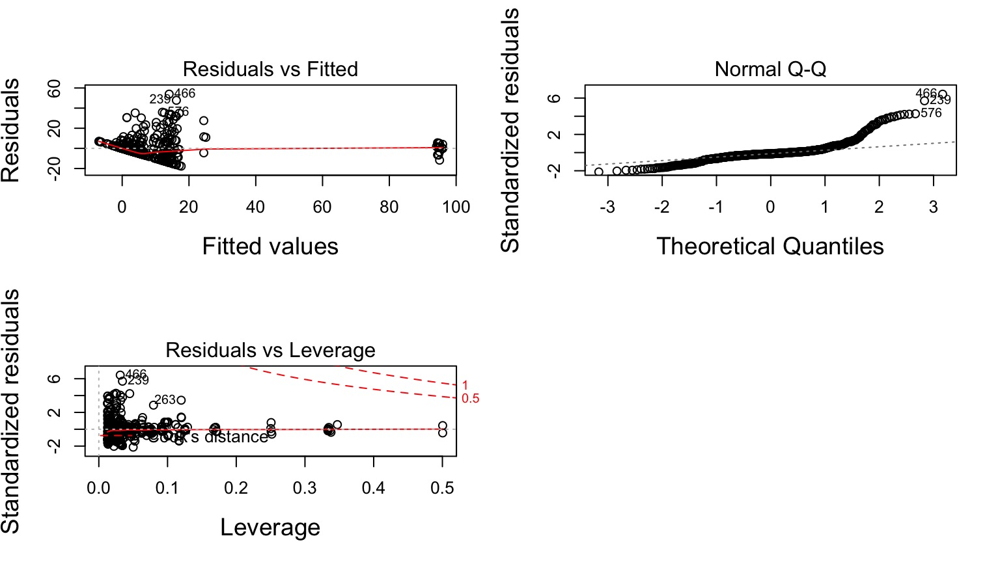
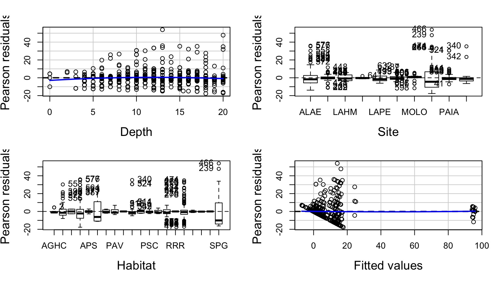
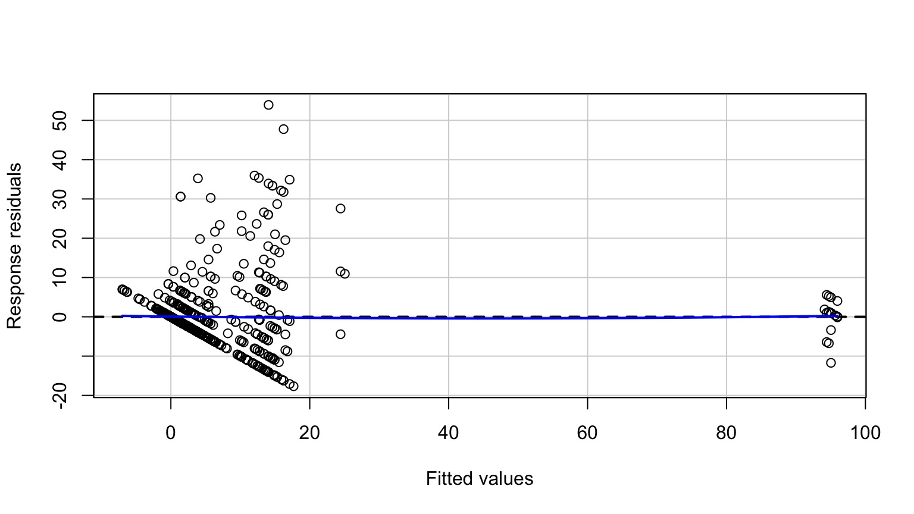
Test stat Pr(>|Test stat|)
Depth -1.7287 0.08435 .
Site
Habitat
Tukey test 4.9529 7.312e-07 ***
---
Signif. codes: 0 '***' 0.001 '**' 0.01 '*' 0.05 '.' 0.1 ' ' 1| Test stat | Pr(>|Test stat|) | |
|---|---|---|
| Depth | -1.728747 | 0.0843499 |
| Site | NA | NA |
| Habitat | NA | NA |
| Tukey test | 4.952891 | 0.0000007 |
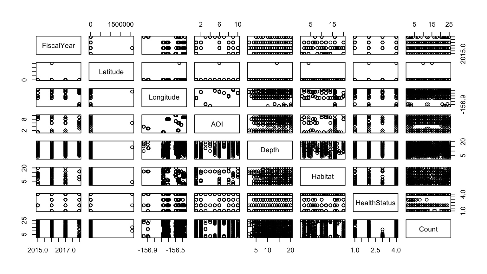
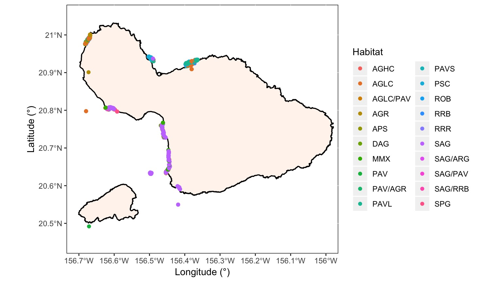
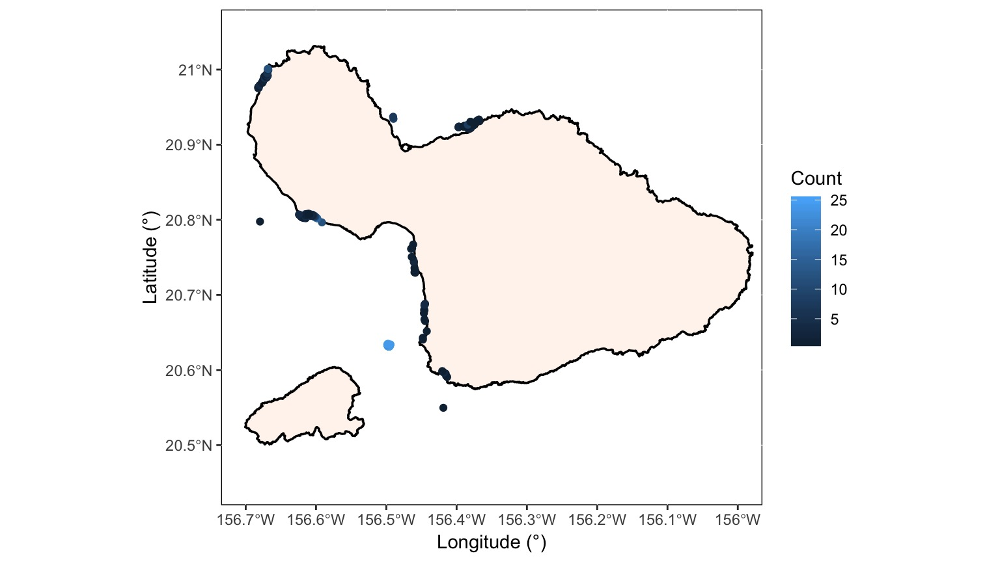
| Sum Sq | Df | F value | Pr(>F) | |
|---|---|---|---|---|
| Depth | 70.9784 | 1 | 9.278514 | 0.0026186 |
| AOI | 5566.6201 | 8 | 90.960711 | 0.0000000 |
| Habitat | 226.9332 | 11 | 2.696855 | 0.0028891 |
| Residuals | 1591.1498 | 208 | NA | NA |
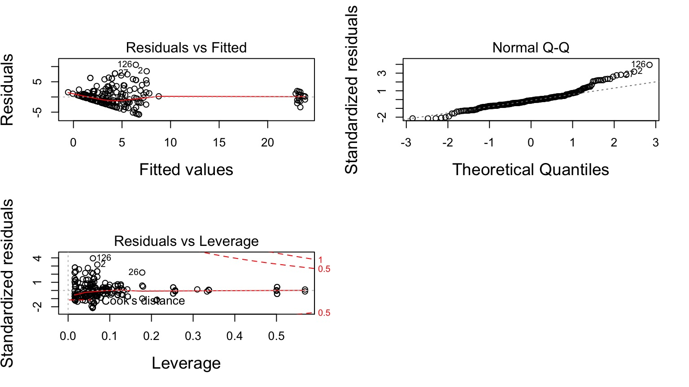
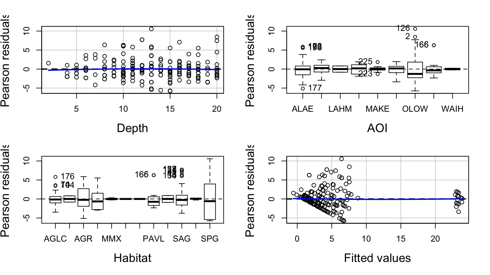
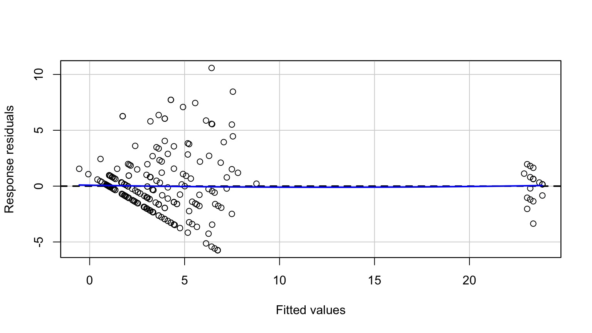
Test stat Pr(>|Test stat|)
Depth -0.4011 0.68879
AOI
Habitat
Tukey test 1.7163 0.08611 .
---
Signif. codes: 0 '***' 0.001 '**' 0.01 '*' 0.05 '.' 0.1 ' ' 1| Test stat | Pr(>|Test stat|) | |
|---|---|---|
| Depth | -0.4010652 | 0.6887858 |
| AOI | NA | NA |
| Habitat | NA | NA |
| Tukey test | 1.7162760 | 0.0861115 |